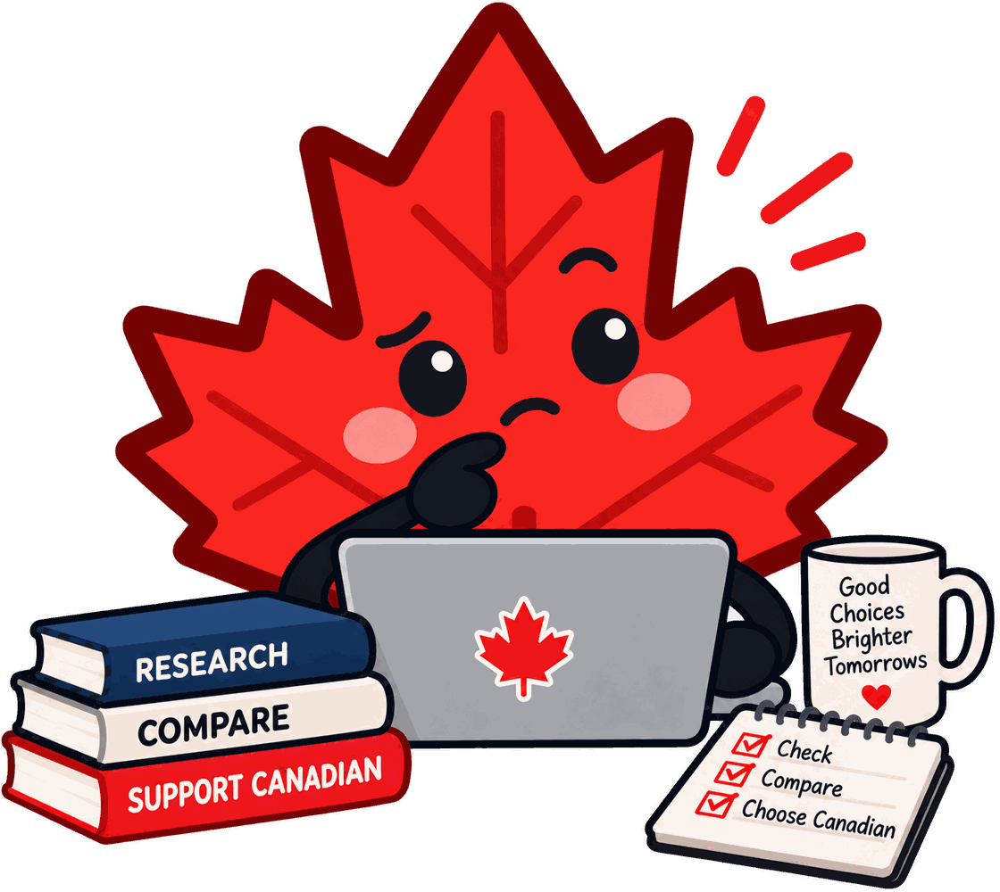

A brand can be founded here, headquartered here, staffed by Canadians and making things in Canadian factories, and still send its profits somewhere else. That is not a scandal — companies get bought — but it is usually invisible at the point where you are deciding what to buy, and the marketing rarely volunteers it.
These 20 are the ones most likely to surprise you. Every claim below comes from a regulatory filing, a corporate registry, an acquisition record, or the company's own statement, and every entry links to the sources we used. Where we are not certain, we say so rather than guess.

These are still Canadian-owned today, in law. Each has agreed to be bought by a foreign company, and none of those deals has completed. We do not move the label until a sale legally closes, because deals do fall through — but you should know it is coming.
Being sold — becoming US-owned · Toronto, Ontario
Canadian-founded in 1973 and still headquartered in Toronto, but not straightforwardly Canadian-owned. Searchlight Capital Partners, a private equity firm headquartered in New York, bought a majority stake in 2015 and has been the controlling shareholder for a decade; Searchlight, the Budman family holding company Kernwood and the directors and officers together hold about 69% of the voting interest. PENDING: on 21 August 2026 Roots agreed to be taken private by Marquee Brands, a US brand-management company, at C$4.10 per share, partnered with Toronto-based JM&A (Joe Mimran and Frank Rocchetti), who would run design, manufacturing, distribution and retail. The deal still needs a two-thirds shareholder vote (meeting expected October 2026), separate minority approval, Competition Act clearance and Ontario court approval, and is targeted to close in Q4 2026, after which Roots delists from the TSX. Roots says the brand and head office stay in Toronto. Labelled unclear rather than Canadian: it is legally Canadian-owned today, but has been controlled from the US for a decade and is now being sold outright to a US buyer, which together makes a plain 'Canadian' label misleading even before the deal closes. Recheck when the deal closes or fails.
Being sold — becoming Japanese-owned · Toronto, Ontario
TIME-SENSITIVE — Canadian today, probably not for much longer. Jamieson Wellness (TSX: JWEL) was founded in 1922, is headquartered in Toronto and manufactures the overwhelming majority of its products in Windsor and Scarborough, Ontario. But in August 2026 it entered a definitive agreement to be acquired by Kirin Holdings of Tokyo for C$2.5 billion enterprise value. The shareholder vote was set for September 2026 and closing is expected in the fourth quarter of 2026. Until that closes it remains Canadian-owned; after it closes this entry becomes Japanese-owned. Recheck from October 2026. Notable because the company markets itself heavily as 'proudly Canadian'.
Every one of these began here, and most still employ Canadians, design here, or brew and sew here. What changed is who receives the profit.
Foreign-owned (not US) · North Vancouver, BC (design and HQ) / Jinjiang, China (Anta Sports)
One of the most commonly assumed-Canadian brands that isn't. Founded in North Vancouver in 1989 and still designed there, but sold to France's Salomon in 2001, then to Finland's Amer Sports in 2005. Since 2019, Amer Sports has been controlled by Anta Sports of China, which led a consortium buyout. Not US-owned, but no longer Canadian-owned despite the Coast Mountains branding.
Foreign-owned (not US) · Winnipeg, Manitoba (operations) / Amsterdam, Netherlands (Just Eat Takeaway)
Founded in Saskatoon in 2012 and long headquartered in Winnipeg, but Canadian ownership ended in 2016 when Netherlands-based Just Eat bought it for $200M. Just Eat merged with Takeaway.com (also Dutch) in 2020 to form Just Eat Takeaway. In 2025 Prosus — a Dutch-listed group controlled by South Africa's Naspers — agreed to acquire Just Eat Takeaway, so the parent may change again, but under either owner it is neither US-owned nor Canadian-owned.
Foreign-owned (not US) · Guelph, Ontario (operations) / Tokyo, Japan (Sapporo)
Founded in Guelph in 1834 and revived by John Sleeman in 1988, but acquired outright by Sapporo Breweries (Japan) in 2006 for $400M — the first major Japanese acquisition of a Canadian brewery. Still brewed in Guelph and marketed on its Canadian heritage, but wholly owned by Sapporo. Not US-owned, not Canadian-owned. Confirmed via Globe and Mail and CBC reporting on the 2006 takeover.
Foreign-owned (not US) · Toronto, Ontario (operations) / Leuven, Belgium (AB InBev)
Founded in London, Ontario in 1847 and still brewed in Canada, but Canadian ownership ended in 1995 when Belgian brewer Interbrew bought it. Interbrew became InBev (2004) and then Anheuser-Busch InBev (2008), a Belgian company. Not US-owned, but not Canadian-owned either — Budweiser, Stella Artois and Corona share the same parent. Confirmed via AB InBev's SEC 20-F filings, which state Belgian incorporation.
US-owned · Montreal, Quebec (operations) / Burlington, Massachusetts (Keurig Dr Pepper)
Despite very strong Canadian brand identity (founded Montreal 1919, marketed as an 'iconic Canadian brand'), Van Houtte has been owned by US-based Keurig Dr Pepper since 2010 (acquired by Green Mountain Coffee Roasters, which later merged into Keurig Dr Pepper). Confirmed via the original 2010 acquisition announcements and Keurig Canada's own press materials.
US-owned · Vancouver, BC (operations) / Dallas, Texas (Match Group)
The clearest case of a Canadian dating company that stopped being Canadian. Founded in Vancouver in 2003 by Markus Frind and famously run as a near-solo operation, it was sold to Match Group in 2015 for US$575M in cash — a sale that required federal industry minister approval under the Investment Canada Act. Still operates from Vancouver, but owned by Match Group (NASDAQ: MTCH) of Dallas.
US-owned · Toronto, Ontario (operations) / New York, New York (Estee Lauder)
Founded in Toronto in 2013 by Brandon Truaxe and still headquartered there with its labs in the city — but no longer Canadian-owned. Estee Lauder (NYSE: EL) invested in 2017, took majority control in 2021, and completed the purchase of the remaining stake on May 31, 2024, making DECIEM wholly US-owned. Confirmed via Estee Lauder's own press release and SEC filings.
US-owned · Montreal, Quebec (operations) / Beverly Hills, California (Regent LP)
Founded in Montreal and long treated as a Canadian brand, but not Canadian-owned since 2019, when Beverly Hills private equity firm Regent LP bought it from L Brands. Operations remain in Montreal; ownership is American.
US-owned · Vancouver, British Columbia (headquarters and design) / New York, New York (TZP Group)
Founded in Vancouver in 2006 by Trent Kitsch and still headquartered and designed there, but control passed to US private equity in August 2021, when New York's TZP Group invested through TZP Capital Partners III. The announcement stated that Vancouver's Krystal Growth Partners, via NLS Group Holdings, retained a 'significant minority interest' — minority being the operative word — and independent trade press reported the transaction as TZP acquiring control. Brentwood Associates, a US firm invested since 2016, exited in the same deal. Kept flagged only because Krystal's own portfolio page still describes the pre-2021 structure and lists Brentwood as a current shareholder, which the transaction announcement contradicts; that page reads as stale rather than as a competing account. A direct statement from SAXX would close this. The .com prices in USD with no Canadian market; saxx.ca is the Canadian store, titled for Canada and serving CAD.
US-owned · Montreal, Quebec (operations) / New York, New York (Unified Commerce Group)
Canadian-founded (Montreal, 2012) but acquired out of bankruptcy protection by Unified Commerce Group, a New York-based retail acquisition firm, in October 2020. Stores and operations remain Canadian-facing, but ownership is US. Confirmed via multiple independent business press reports on the 2020 acquisition and UCG's own statements.
Foreign-owned (not US) · Invermere, BC (operations) / Turin, Italy (Lavazza Group)
80% owned by Lavazza Group (Italy) since May 2017, purchased from Swander Pace Capital. Founder Elana Rosenfeld retains 20% and remains CEO. Not US-owned, but no longer majority Canadian-owned either — a common misconception given the strong Canadian brand identity. Confirmed via Lavazza's own 2017 acquisition announcement. The .com prices in USD with no Canadian market; kickinghorsecoffee.ca is the Canadian store, serving CAD.
US-owned · Montreal, Quebec (design and operations) / New York, New York (Lee Equity Partners)
Resolved — the earlier conflict was that both sources were partly right. Mackage's parent really is APP Group of Montreal (which also owns Soia & Kyo), but APP Group is itself majority-owned by InterLuxe Holdings, the consumer-brand arm of New York's Lee Equity Partners, following its 2017 investment. Other major shareholders include SK Holdings of Korea and a fund of the Montreal transit pension plans; founders Eran Elfassy and Elisa Dahan retain the largest minority stakes. Design and operations stay in Montreal, but control is American.
US-owned · Toronto, Ontario (headquarters)
A case where the head office and the owner are in different countries. Founded in Toronto in 1960 by Isadore Sharp and still headquartered there, but majority ownership is American: Bill Gates' Cascade Investment raised its stake to 71.25% in 2021 by buying half of Kingdom Holding's shares. Saudi Arabia's Kingdom Holding retains about 23.75% and Sharp about 5%. Canadian-run, US-controlled.
Foreign-owned (not US) · Paris, France (Accor)
Genuinely interesting history: originally Canadian (Canadian Pacific Hotels acquired majority interest in 1999), but the Fairmont brand was later sold and is now owned by Accor, a French hospitality group — not US-owned, and no longer Canadian-owned either despite the brand's Canadian roots and many landmark Canadian properties (Banff Springs, Château Frontenac).
US-owned · Guelph, Ontario (operations) / Chicago, Illinois (KCM Capital Partners)
Canada's leading powersports retailer — snowmobile, ATV, dirt bike and watersports gear — founded in Guelph in 1990. No longer Canadian-owned: in November 2022 Chicago private investment firm KCM Capital Partners acquired it alongside Chicago's Prairie Capital and company management. Stores and operations stay in Ontario; control is American.
Marketing that leans on a Canadian identity the ownership no longer supports. This is the group worth knowing about, because the branding is doing the opposite of informing you.
US-owned · Boucherville, QC (operations) — owned by Sycamore Partners, New York
Sold by Lowe's to US private equity firm Sycamore Partners in Feb 2023. Despite Canadian branding/history and 'Truly Canadian' marketing, current ownership is US private equity. Source: Lowe's/Sycamore Partners deal announcements, Nov 2022–Feb 2023.
US-owned · Burlington, Massachusetts / Frisco, Texas (Keurig Dr Pepper)
The name says Canada and the brand genuinely started there — invented in Toronto in 1904 by John J. McLaughlin — but it has not been Canadian-owned since 1986, when it went to Cadbury Schweppes (UK). US-owned since the 2008 Dr Pepper Snapple split, and part of Keurig Dr Pepper (NASDAQ: KDP) since the 2018 Keurig merger. Ownership chain confirmed via KDP's SEC filings and the documented sale history.
US-owned · Toronto, Ontario (operations) / Chatham Borough, New Jersey (Chatham Asset Management)
Owned by Postmedia Network, which is 63-66% owned by Chatham Asset Management, an American hedge fund — despite widespread perception as a purely Canadian newspaper chain. Confirmed via Postmedia's own SEDAR/TSX disclosures and multiple independent news reports (Globe and Mail, Wikipedia citing primary sources).
Because the point is not that everything is a disappointment. These hold up — and where a Canadian option genuinely exists, the directory names it.
Canadian-owned · Toronto, Ontario
TSX/NYSE: GOOS — dual-listed but Canadian headquartered and founded
Canadian-owned · Vancouver, BC
TSX: ATZ
Canadian-owned · Vancouver, BC
Sold back to a Canadian investor group led by Tim Gu (also an investor in Roots and Tilley) in May 2025, ending the 2020–2025 period of US private equity ownership under Kingswood Capital Management. Confirmed via MEC's own press release plus independent retail trade reporting (retail-insider.com, hardlines.ca). A partial management buyout — CEO Peter Hlynsky and CMO Chris Speyer are also part of the new ownership group.
Canadian-owned · Vancouver, BC
Founded 2009 by Lyndon and Jamie Cormack, privately held. The .com prices in USD with no Canadian market; herschel.ca is the Canadian store, titled "Herschel Supply Co. Canada" and serving CAD.
Canadian-owned · Vancouver, British Columbia
Privately held Canadian natural wellness and essential oils retailer, founded in Vancouver in 1992 by Jean-Pierre LeBlanc and Kate Ross LeBlanc, who still own the company. The .com prices in USD with no Canadian market; saje.ca is the Canadian store, serving CAD.
Canadian-owned · Etobicoke, Ontario
One of the very few entries where the whole chain stays in Canada. Women-founded and women-led — founder Donna Smith with CEO Sue Cadman — with every garment produced within 50km of the studio in the Greater Toronto Area, from fabrics custom-milled locally rather than imported. The company states 95% of its production materials are recovered.
Canadian-owned · Don Mills, Ontario
Privately held Canadian outdoor apparel brand. The .com prices in USD with no Canadian market; the Canadian store is ca.tilley.com, titled "Tilley Canada" and serving CAD.
Canadian-owned · Nelson, British Columbia
Hemp yarn and knitting pattern company founded by Lana Hames, who came home from a 1997 trade show set on making hemp textiles a business and launched Lanaknits in 2000 after three years of research. Head office and design studio are in downtown Nelson, BC, and the yarns are stocked by knitting shops across North America. Hames confirmed directly to MapleCheck that the fibre is sourced from Europe and Asia, and describes it as ethically and sustainably sourced.
Canadian-owned · Toronto, Ontario
Toronto manufacturer of down, feather and down-alternative duvets and pillows, supplying both hospitality and retail. Most products are made in house on St. Regis Crescent, and the company states 93% of its SKUs qualify for a Made in Canada or Product of Canada label — a self-declared figure, but an unusually specific one.
Canadian-owned · Vancouver, British Columbia
Founded in Vancouver in 1990 by two friends from Virden, Manitoba, and majority-owned since 2007 by Stern Partners, a private investment firm based in Vancouver — so the private-equity owner is itself Canadian. Confirmed from both sides: Urban Barn states it has "always been 100% Canadian-owned and operated", and Stern Partners lists it in its own portfolio. Around 50 stores and 650 staff. On manufacturing the company is more careful than its marketing suggests: it sells a Canadian-Made Custom Furniture line but does not claim the wider catalogue is made here, which is why this is recorded as partly rather than fully Canadian-made.
Canadian-owned · Vancouver, British Columbia
Vancouver company founded in 2019 by Alexa Suter, making zinc-infused underwear, and backed by Canadian investors including District Ventures Capital. Worth knowing: the website says orders ship from the US, which is a fulfilment arrangement rather than a change of ownership — the company is Canadian. The bare hu-ha.com prices in USD; the Canadian store is at hu-ha.com/en-ca, declared by the site's own hreflang and confirmed serving CAD, which is where our link goes.
Public filings and exchange listings first (SEDAR+, SEC EDGAR), then corporate registries, then acquisition and deal records, then the company's own public statements. Ownership, where things are manufactured, and where materials come from are tracked as three separate questions, because conflating them is how "Canadian" ends up meaning nothing. Entries we could not confirm are labelled as still being verified rather than quietly guessed at.
Ownership changes. If something here is out of date, or you know something we do not, tell us — corrections are how this stays worth reading.